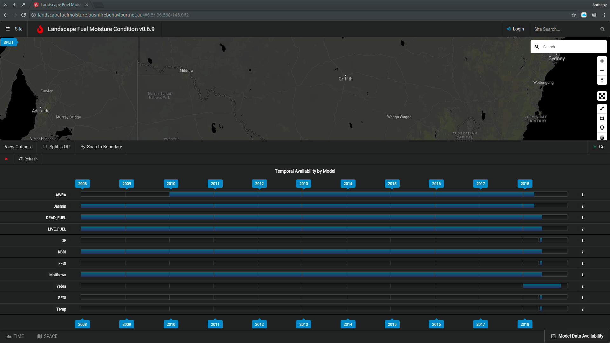

Models
Model By Strata
| Strata | Model(s) |
|---|---|
| Canopy | LFMC, LVMC, FFDI |
| Sub-canopy | LFMC, LVMC, FFDI |
| Elevated | LFMC, LVMC, FFDI |
| Near-surface | LFMC, LVMC, DFMC, GFDI |
| Surface | DFMC, JASMIN, GFDI, DF, Curing |
| Root zone | AWRA-L |
| Upper soil | AWRA-L |
| Deep soil | AWRA-L |
See: Model Descriptions and metadata
Dynamic Temporal Availability is shown on the Reference Website
